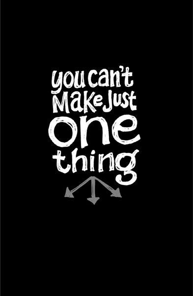

{% include JB/setup %}
{% raw %}
<div>

<h2 id="filepos97779" class="calibre19"><span class="calibre2"><a class="calibre13"></a><strong class="calibre14">Tone is in your fingers</strong></span></h2><div class="calibre4"></div>
<p class="calibre7">Guitar gurus say, "Tone is in your fingers." You can buy the same guitar, effects pedals, and amplifier that Eddie Van Halen uses. But when you play that rig, it's still going to sound like you.</p>
<p class="calibre17">Likewise, Eddie could plug into a crappy Strat/Pignose setup at a pawn shop, and you'd still be able to recognize that it's Eddie Van Halen playing. Fancy gear can help, but the truth is your tone comes from you.</p>
<p class="calibre17">It's tempting for people to obsess over tools instead of what they're going to do with those tools. You know the type: Designers who use an avalanche of funky typefaces and fancy Photoshop filters but don't have anything to say. Amateur photographers who want to debate film versus digital endlessly instead of focusing on what actually makes a photograph great.</p>
<p class="calibre17">Many amateur golfers think they need expensive clubs. But it's the swing that matters, not the club. Give Tiger Woods a set of cheap clubs and he'll still destroy you.</p>
<p class="calibre17">People use equipment as a crutch. They don't want to put in the hours on the driving range so they spend a ton in the pro shop. They're looking for a shortcut. But you just don't need the best gear in the world to be good. And you definitely don't need it to get started.</p>
<p class="calibre17"><a class="calibre16"></a>In business, too many people obsess over tools, software tricks, scaling issues, fancy office space, lavish furniture, and other frivolities instead of what really matters. And what really matters is how to actually get customers and make money.</p>
<p class="calibre17">You also see it in people who want to blog, podcast, or shoot videos for their business but get hung up on which tools to use. The content is what matters. You can spend tons on fancy equipment, but if you've got nothing to say ... well, you've got nothing to say.</p>
<p class="calibre17">Use whatever you've got already or can afford cheaply. Then go. It's not the gear that matters. It's playing what you've got as well as you can. Your tone is in your fingers.</p>
<p class="calibre3"><a class="calibre16"></a></p><div class="calibre4"></div>
</div>

{% endraw %}

